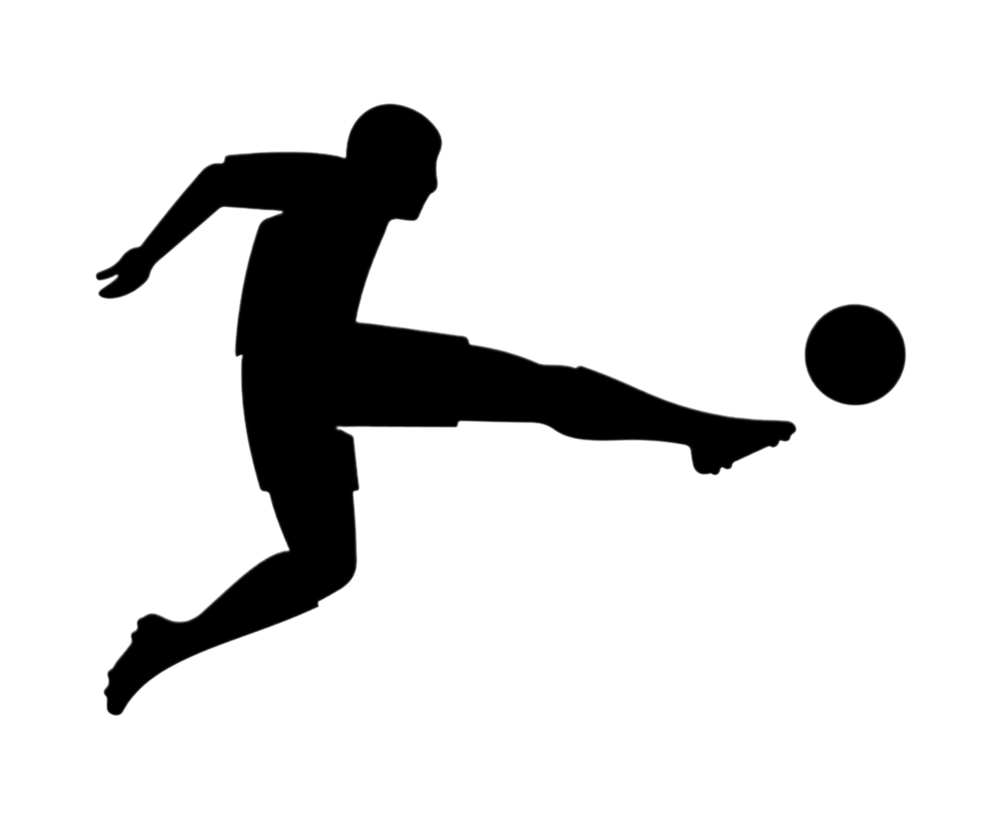

SPORLAR

Çocukluğumdan beri sporla hep içli dışlı oldum. İlgi alanlarım genelde spor oldu benim. Futbola olan ilgim çok küçük yaşta başladı. Her ne kadar futbola olan ilgim mahalle aralarında top koşturmayla başlasa da oynamak kadar izleyip yorumlarını dinlemek de çok keyifli gelmeye başlamıştı. Çocukluk dönemimde biraz yaramazdım, yerinde duramayan haylaz tiplerden. 7 yaşımda babam üzerimdeki hiperaktifliği atmam için benim de isteğim üzerine beni arka sokaktaki kickboks salonuna yazdırdı. Kickboks'a gittikçe daha çok ilgi duymaya başladım. Belirli zamanlarda kickboks'a ara verdiğim oldu fakat şu anda 1 Kez Türkiye Şampiyonluğum, 3 kez Marmara Şampiyonluğum ve tam 7 kez İstanbul Şampiyonluğum bulunmakta. Aynı zamanda vücut gelişiminin önemi açısından küçük yaşta yüzme kursuna gittim. Yine yüzmede de belirli stillerde şampiyonluklarım bulunmakta.